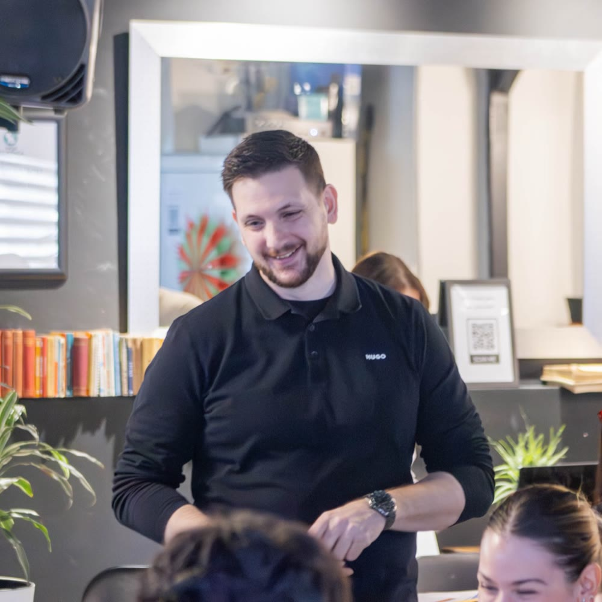

Opsluži više klijenata bez još zaposlenih.
Sistem koji povećava kapacitet 30–50%
30+ firmi i timova je poraslo uz naš sistem

Posla ima. Problem je što sve prolazi kroz tebe.
Ovo su rečenice koje čujem od skoro svakog vlasnika na prvom razgovoru. Retko ih neko kaže naglas pred timom.
Novi čovek neće automatski rešiti problem kapaciteta.
Ako posao čeka tebe, novi čovek će čekati zajedno sa ostalima. Prvo treba videti gde se kapacitet gubi: u čekanju između koraka, u doradama, u odlukama koje samo ti možeš da doneseš.
Novi zaposleni, 4 meseca
1.500 € mesečno, pre nego što znaš da li je problem uopšte bio u broju ljudi.
Mapa uskih grla, koja može da ti uštedi 6.000 € za novog zaposlenog
Jedan dan radionice. Vidiš gde posao čeka, šta je usko grlo i koji su prvi potezi za narednih 6 do 9 meseci.
Ovu računicu je napravio Dušan iz Floumate-a, agencije za automatizacije. Posle radionice je zaključio da mu novi čovek ne treba i primio je dva nova klijenta sa istim timom.
Prvo mapa. Pa jedno usko grlo. Pa sistem.
Ne krećem od alata ni od gotovog šablona. Krećem od toga kako posao stvarno teče kroz tvoje ljude, od prvog upita do preporuke.
Mapa celog toka
Mapiramo korake, uloge, alate i probleme. Merimo koliko koji korak traje i koliko posao čeka između njih. Vidi se i šta sve prolazi kroz tebe.
Jedno usko grlo, tri prioriteta
Od svih problema biramo onaj koji drži sve ostale. Dobijaš Plan rasta za 6 do 9 meseci: tri prioriteta i spisak onoga što sada ne radiš.
Sistem koji tim drži
Pravila isporuke, jasne odgovornosti, granice odluka, alati i automatizacije tamo gde proces već radi. Plus nedeljno praćenje, da promena ne stane posle šest nedelja.
Uvek počinjemo mapom. Posle biraš ko sprovodi.
Bez mape nema plana koji ima smisla. Kad je mapa gotova, sistem postavljaš ti uz moje vođenje, ili ga postavlja moj tim sa tvojim ljudima.
Mapa uskih grla
Radionica na kojoj mapiramo tvoj ceo tok posla. Posle nje dobijaš izveštaj i Plan rasta za 6 do 9 meseci.
Za vlasnike koji hoće da znaju gde se gubi kapacitet pre sledeće odluke.
Operativni sistem rasta
Posle mape postavljaš sistem uz moje vođenje: pravila isporuke, odgovornosti, alate i ritam praćenja. 4 meseca.
Za vlasnike malih timova koji hoće da sprovedu promenu sami, uz nedeljne sesije i proveru.
Operativni sistem rasta 1:1
Isti sistem, ali promenu sa tvojim ljudima sprovodimo moj tim i ja. Ti učestvuješ nekoliko sati nedeljno, za odluke i odobrenja. Oko 6 meseci.
Za vlasnike sa timom od 5 do 15 ljudi koji nemaju vremena da vode promenu.
Isti tim. Više klijenata. Manje tebe u svakoj odluci.
Pusti ih da ti kažu sami
Patrick iz američke agencije je vratio svoje vreme kao osnivač. Dušan iz Floumate-a je posle prvih promena odmah video pomak. Zerina sada ima koga da pozove kad zapne, umesto da sama luta.
Isti princip se ponavljao i u maloj agenciji i u velikom timu: posao ne čeka zbog ljudi, nego zbog toga kako je postavljen.
Ono što radim na tvom biznisu, prvo sam uradio na svom.
Moja firma je mogla da isporuči dve i po radionice mesečno. Od zahteva do izveštaja prolazio je 31 dan, a izveštaj sam mogao da napišem samo ja. Usko grlo moje firme bio sam ja.
Rešile su ga čekliste, šabloni i još jedna osoba obučena za pregled, a ne više mog rada.
Pre toga sam godinama vodio isporuku i timove u auto industriji, IT-ju i gaming industriji, uključujući tim koji radi na igrama Tetris. Danas to iskustvo koristim za vlasnike koji su zarobljeni u sopstvenoj firmi.
Ono što me najčešće pitaju
Sa kim radiš?
Sa vlasnicima digitalnih uslužnih biznisa u kojima isporuka ima više koraka i primopredaja: softverske i gaming agencije, agencije za automatizacije i marketing, online edukacija. Radim i sa solo vlasnicima koji rade online i hoće da rastu bez haosa.
Nemam problem sa upitima, nego sa isporukom. Da li je ovo za mene?
Jeste, upravo za tebe. Ako ti je glavni problem to što upita nema, reći ću ti to na pozivu i uputiti te na pravu osobu. Nema smisla pojačavati prodaju ako isporuka ne može da primi.
Da li ćeš mi reći da ne zapošljavam?
Ne. Nekad je novi čovek pravi potez. Razlika je što ćeš odluku doneti kad vidiš gde se kapacitet gubi, a ne zato što si umoran.
Moram li da kupim nove alate?
Ne. Alat dolazi posle procesa. Gde god može, koristimo ono što već imaš. Automatizujemo samo ono što je jasno i što se ponavlja.
Koliko mog vremena ovo traži?
Mapa uskih grla: jedan radni dan plus kratka priprema. Grupni program: 2 h grupne sesije nedeljno i 1 do 3 h rada na tvojoj firmi, a to su sati koje vraćaš iz operative. Program 1:1: nekoliko sati nedeljno, za odluke i odobrenja.
Šta se dešava na besplatnom pozivu?
Razgovaramo 30 minuta: gde si sada, gde želiš da budeš za godinu dana i šta te koči. Na kraju zajedno odlučujemo da li ima smisla da radimo i u kom obliku. Bez pritiska.
Prvi korak nije novi zaposleni. Prvi korak je mapa.
Na pozivu od 30 minuta vidimo da li Mapa uskih grla ima smisla za tvoj biznis.